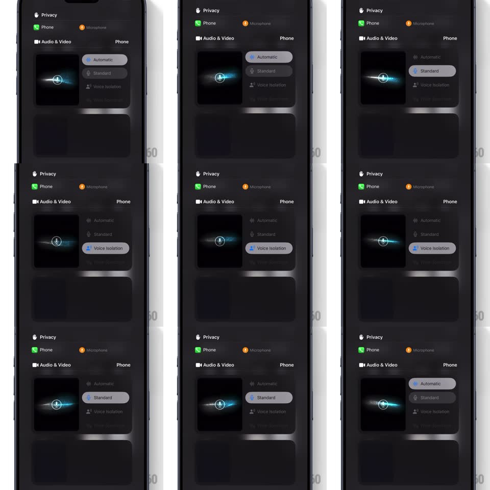

Media
Frame-by-frame

Rebuild this interaction 1:1: the iOS microphone mode selector (Automatic / Standard / Voice Isolation) with a live visualizer - a small mic icon wrapped in a glowing particle aura that morphs its shape as you pick an isolation level, while the selected option pill slides under your tap.

Rebuild this interaction 1:1: the iOS microphone mode selector (Automatic / Standard / Voice Isolation) with a live visualizer - a small mic icon wrapped in a glowing particle aura that morphs its shape as you pick an isolation level, while the selected option pill slides under your tap. ## Integration Integration: stack-agnostic spec - springs given as stiffness/damping, timed motions as duration + curve; map every value to your framework and animation library of choice. ## Scene A call control panel (Privacy, Phone, Microphone rows) with an "Audio & Video" card: left side shows a dark visualizer tile with a mic glyph in a bright orb; right side lists the three mode pills. ## Motion spec Pattern: selection-driven particle morph. - Tap a mode: the option pill highlight slides to it (spring ~420/28, ~280ms) with the icon tinting. - Visualizer: the particle aura around the mic morphs - Automatic = a loose horizontal spray of soft particles with a bright core; Standard = a tight, symmetrical orb; Voice Isolation = a compact horizontal lens/slit with the particles pulled inward, darker surroundings. - The morph eases over ~500ms (ease-in-out); particles travel along curved paths, never pop. - The aura idles with constant drift: particles orbit slowly (~8s/rev), brightness breathing (+/-15%, 1.5s). - The orb core flares briefly (+30% brightness, 250ms) on each selection change. ## Calibration - The visualizer is emissive on pure black - additive glow, no visible particle edges. - Each mode's aura shape must be instantly distinguishable; no two modes share a silhouette. ## Reduced motion The aura crossfades between the three static shapes (200ms); no drift or breathing. ## Don't miss - The aura is what animates - the mic glyph stays fixed and constant. - Selection and aura morph are decoupled slightly: aura finishes ~200ms after the pill lands.